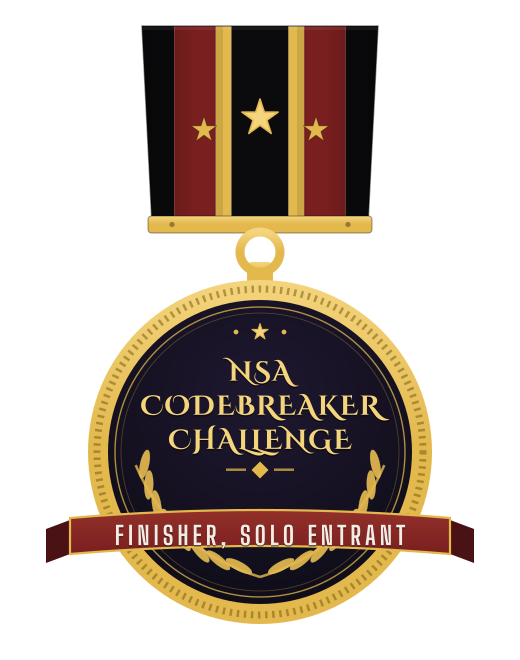
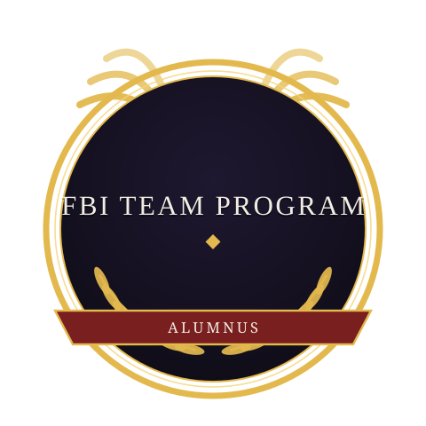
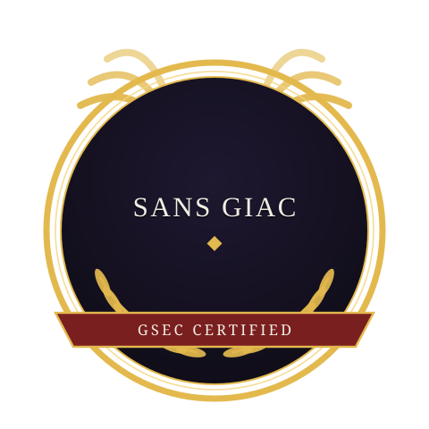
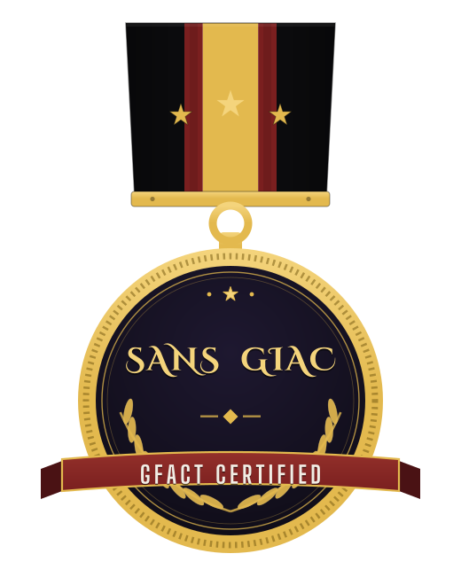
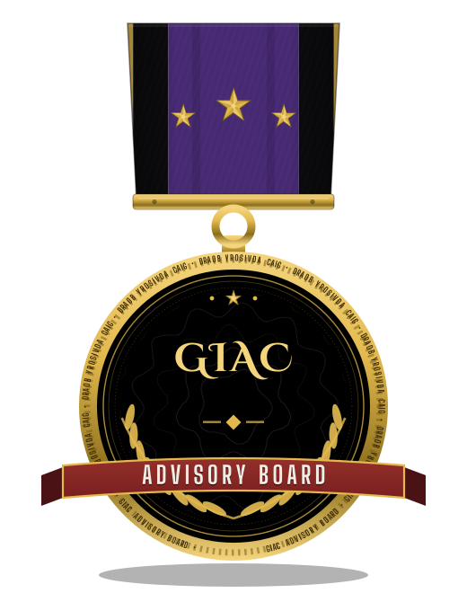
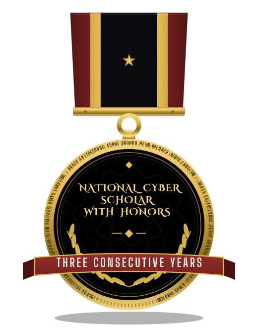
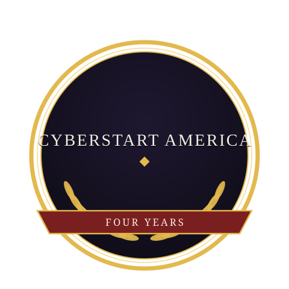
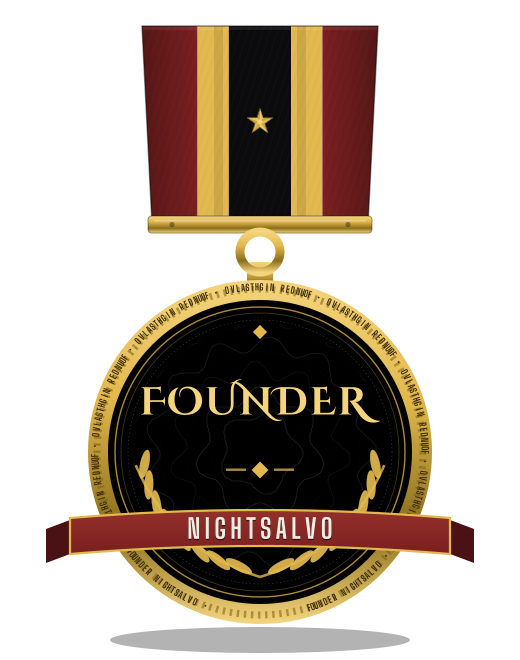
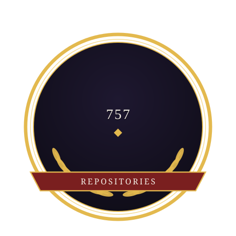

757
REPOSITORIES IN THE FLEET
Night falls. Threats end.
One founder. One record. Nobody else fields this combination: GIAC certifications with an Advisory Board seat, a solo finish in the NSA Codebreaker Challenge, and a 584-project security library I built and then audited line by line. I am Gavin Blacklock, and NightSalvo is the firm that record deserves. A unicorn, by the only definition that matters: there is one of me.





Operator-grade work, every claim on this page verifiable.
Source-code and repository audits: the code read line by line, findings ranked, evidence attached.
Security reviews of small codebases, written plainly enough to act on the same day.
Configuration and system hardening checked against the standard it claims to meet.
Defined questions, answered from primary sources, delivered as a written record.
Defense is the promise. Eradication is the proof.
Open to founding engagements. The route in is my GitHub profile: github.com/Epsilon0xCell.
I am Gavin Blacklock (Gavin K.). I publish as Epsilon0xCell. Everything on this page is part of a public record, and every claim on it can be checked.
NightSalvo is founder-led because the record is founder-made: the library, the platform, the audits, and the themed rebuild now running across the fleet all carry one name, because one person did the work.
The standing behind the firm: the founder holds the National Cyber Scholar title earned by 600 of 30,000 students who seek to qualify, the top 2% of the national cybersecurity student funnel, with Honors three years running. An assessment of the full record models the 88th percentile of all participants in cybersecurity, and a modeled 76th percentile among working professionals alone.




ShadowGuard-AI, the library. ShadowStrikeOS, the platform. Shatterpoint Security, the practice. One fleet, 757 repositories, every one of them public.